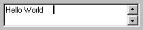

( style = 0, readonly = false, font = "", size = "", zoom = false, mandatory = false )
EditorControl inherits from EditControl The contents of the control are set to the supplied text.
Xstretch and Ystretch default to 1.
The font parameter allows you to enter the font type. This parameter must be specified in order for the size to take effect.
The size parameter allows you to enter the size of the text in the field.
If zoom is false, pressing the F6 key while the EditorControl has the focus will open a seperate edit window.
Below is a list of its own method:
GETDLGCODE()
KEYDOWN(wParam)
HasFocus?()

See also: FieldControl